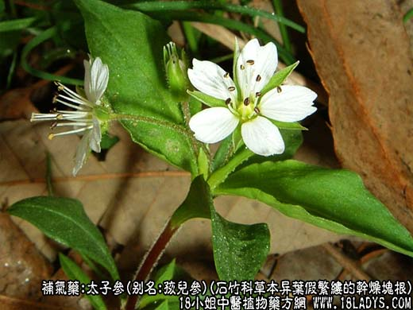
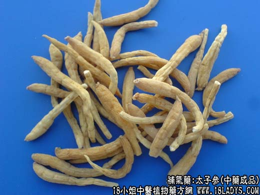
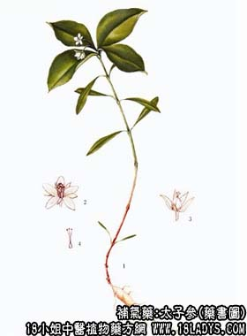

本品为少常用中药。古籍本草书中未见记载，原为江苏省的民间药。
别名：孩儿参、童参。
来源：为石竹科多年生草本植物异叶假繁缕的干燥块根。现多栽培。
产地：主产于江苏、山东、安徽等地。
性状鉴别：块根细长纺锤形或细长条形，平直或弯曲，长约3～7厘米，直径2～5毫米。表面淡黄白色，半透明，微有纵皱，并有若干横沟纹及须根断面后的痕迹。根头钝圆，多有残留的茎基或茎痕，下端渐细。质坚硬而脆，易折断，断面黄白色，角质样（加工时沸水焯过）直接晒干的断面为白色，有粉性。气微，味甘。以肥壮，黄白色，无须根者为佳。
主要成分：含果糖等。
功效与作用：益气、生津。补力远不及人参，且侧重于补益阴气、生津止渴、调肺润燥。
炮制：生用。
性味：甘、苦、微温。
归经：入脾、肺经。
功能：补气、生津。
主治：肺虚咳嗽，脾虚泄泻，久病气虚，气短自汗，精神疲倦，津液不足。
临床应用：体质虚弱而属阴虚者较适宜，尤其适用于肺气不足、伤津口渴、阴虚咳嗽的患者；对改善消化吸收功能（补益脾胃）也有一定的帮助。小儿病后体弱无力、自汗，用之亦佳。此外，还有报道说用太子参配五味子等治神经衰弱，效果较好，方如参味合剂。
与人参比较：人参补力胜于太子参，强心救脱，或体虚而偏于寒者用人参较好；太子参较柔润，用于阴虚血热则较适宜。但在一般补剂中，也可用太子参代替人参。又血压偏高不宜用人参时，可用太子参替代。
与西洋参比较：两者都能生津，但太子参稍带补气作用。在热病或病后伤津、出现口舌干燥症状时，或热邪未尽而正气已伤者，可用太子参代替西洋参。总之，对太子参的功力不宜估计过高。论滋水制火，太子参不及沙参、玄参；论补益元气，太子参甚至不如党参。但在一定的情况下，替代人参、党参使用，仍有其价值。
使用注意：习惯上不予藜芦配伍。
用量：因药力较缓，故用量宜稍大，相当于人参的2～3倍，常用15～30g，不需另炖。
处方举例：参味合剂：太子参浸膏2毫升，五味子酊1.5毫升，酸枣仁酊3毫升，单糖浆3.5毫升，共制成10毫升，每日2词，每次5毫升，开水冲服。
注：《本草纲目拾遗》有“太子参”一名，系指五加科人参之小者而言，但商品并未用此名称。